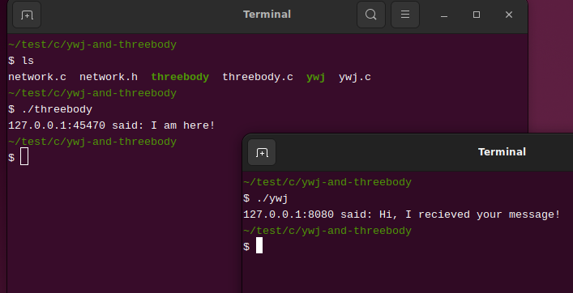

2025 年 03 月 05 日
现在，你已经实现了一个简单的 C/S 架构的程序，这个程序分为两个部分，一个是 ywj，它是客户端（Client），另一个是 threebody，它是服务端（Server），这两部分通过 socket 合为一体。不妨再勇敢一些，Internet 也不过是使用不计其数的 socket 将各个部分连接起来的一个程序。你想到了……量子力学么？通信即测量，网络即量子。
不过，还是尽快从无尽的遐想中回归，看一看 ywj.c 和 threebody.c 中的
main
函数，它们的代码已经有些不清晰了，像桌面上连接计算机的电源线以及乱七八糟的信号线和数据线，我们需要尝试用面向对象的办法收纳这些代码。
C 语言在语法上不能像 C++、Java、Java 等语言那样优雅地支持面向对象编程，但是若将面向对象编程视为一种编程范式，C 在一定程度上可以实现它，例如可以用结构体模拟类，将类名作为一些函数名的前缀以模拟类的方法。
首先，定义一个类 Socket：
typedef struct {
int listen;
int connection;
char *host;
size_t host_size;
char *port;
size_t port_size;
} Socket;这个类表达的是一个通用的 socket，即可用于客户端，也可用于服务端，同时它还能以文字的形式记录对方的 IP 地址和端口——若是客户端的 socket，则记录服务端的 IP 地址和端口；若是服务端的 socket，则记录客户端的 IP 地址和端口。
有两种方法为类 Socket
创建对象，分别面向客户端和服务端：
Socket *client_socket(const char *host, const char *port);
Socket *server_socket(const char *host, const char *port);服务端的 Socket 对象，还需要一个 accept
方法：
void server_socket_accept(Socket *x);顾名思义，该方法主要是基于 x->listen 建立
x->connection，前者为服务端的监听
socket，后者是与某个客户端通信的 socket。
拥有可通信的 Socket
对象后，可基于以下两个方法发送和接受信息：
void socket_send(Socket *x, const char *message);
char *socket_recieve(Socket *x);socket_free 释放 Socket
对象占用的内存：
void socket_free(Socket *x);一个 socket 用毕后，需要关闭，而上述方法未为 Socket
对象的 listen 和 connection 成员提供
close 方法。这是我故意而为之，因为 socket API 中的
close
函数的用法已经非常简单，没有必要再将其封装为一个函数。假设
Socket *x 指向某个服务器端的 Socket
对象，可使用以下代码关闭该对象的两个 socket：
close(x->connection);
close(x->listen);对于面向客户端的 Socket 对象只需关闭
connection。
为了简化客户端或服务端的 Socket
对象的创建过程，需要先将网路地址列表的构造过程封装为函数：
static struct addrinfo *
get_address_list(const char *host, const char *port) {
struct addrinfo hints, *addr_list;
memset(&hints, 0, sizeof(struct addrinfo));
hints.ai_family = AF_UNSPEC;
hints.ai_socktype = SOCK_STREAM;
int a = getaddrinfo(host, port, &hints, &addr_list);
if(a != 0) {
fprintf(stderr, "getaddrinfo error: %s\n", gai_strerror(a));
exit(-1);
}
return addr_list;
}上述函数定义中的一切，皆已在「网络地址」中给出了详细讲解，需要注意的是，该函数是私有的，即除了我之外，我不打算让任何人使用它，故而使用
static 修饰它。
以下私有函数，用于构造一个暂且无法使用的 Socket
对象：
static Socket *socket_new(void) {
Socket *result = malloc(sizeof(Socket));
result->listen = -1;
result->connection = -1;
result->host_size = NI_MAXHOST * sizeof(char);
result->host = malloc(result->host_size);
result->port_size = NI_MAXSERV * sizeof(char);
result->port = malloc(result->port_size);
return result;
}客户端 Socket 对象的创建过程颇为简单：
Socket *client_socket(const char *host, const char *port) {
Socket *result = socket_new();
struct addrinfo *addr_list = get_address_list(host, port);
int fd = -1;
for (struct addrinfo *it = addr_list; it; it = it->ai_next) {
fd = socket(it->ai_family, it->ai_socktype, it->ai_protocol);
if (fd == -1) continue;
if (connect(fd, it->ai_addr, it->ai_addrlen) == -1) {
close(fd);
continue;
}
getnameinfo(it->ai_addr, it->ai_addrlen,
result->host, result->host_size,
result->port, result->port_size,
NI_NUMERICHOST | NI_NUMERICSERV);
break;
}
freeaddrinfo(addr_list);
result->connection = fd;
return result;
}客户端的 Socket 对象的两个 socket，只有
connection 有意义。
服务端的 Socket 对象构造过程如下：
Socket *server_socket(const char *host, const char *port) {
struct addrinfo *addr_list = get_address_list(host, port);
int fd = -1;
for (struct addrinfo *it = addr_list; it; it = it->ai_next) {
fd = socket(it->ai_family, it->ai_socktype, it->ai_protocol);
if (fd == -1) continue;
if (bind(fd, it->ai_addr, it->ai_addrlen) == -1) {
close(fd);
continue;
}
break;
}
freeaddrinfo(addr_list);
if (fd == -1) {
fprintf(stderr, "failed to bind!\n");
exit(-1);
}
if (listen(fd, 10) == -1) {
fprintf(stderr, "failed to listen!\n");
exit(-1);
}
Socket *result = socket_new();
result->listen = fd;
return result;
}由于服务端的 Socket 对象，其 connection
成员需要与具体的客户端连接时方能确定，故而上述代码仅构造了用于监听的
socket，即 listen 成员（不要与 socket API 中的
listen 函数混淆）。
服务端 Socket 对象接受客户端连接的过程如下：
void server_socket_accept(Socket *x) {
struct sockaddr_storage addr;
socklen_t addr_len = sizeof(addr);
x->connection = accept(x->listen, (struct sockaddr *)(&addr), &addr_len);
if (x->connection == -1) {
fprintf(stderr, "failed to accept!\n");
exit(-1);
}
getnameinfo((struct sockaddr *)&addr, addr_len,
x->host, x->host_size,
x->port, x->port_size,
NI_NUMERICHOST | NI_NUMERICSERV);
}通过 Socket 对象的 connection
成员发送信息，过程较为简单：
void socket_send(Socket *x, const char *message) {
if (send(x->connection, message, strlen(message), 0) == -1) {
fprintf(stderr, "send error!\n");
exit(-1);
}
}从 Socket 对象的 connection
成员接受信息，需要一点技巧。因为无法预知接受的信息长度（字节数），故而需要用一个定长的缓冲区，从
socket
中循环读取信息，并将每次读取的信息合并到一个动态增长的字符串中：
char *socket_recieve(Socket *x) {
size_t m = 1024;
char *buffer = malloc(m * sizeof(char));
size_t n = 0;
char *total = NULL;
while (1) {
ssize_t h = recv(x->connection, buffer, m, 0);
if (h == -1) {
fprintf(stderr, "recv error!\n");
exit(-1);
} else if (h == 0) break;
else {
total = realloc(total, n + h);
memcpy(total + n, buffer, h);
n += h;
if (h < m) break;
}
}
if (total) { /* 为字符串增加终止符 */
total = realloc(total, n + 1);
*(total + n) = '\0';
n += 1;
}
free(buffer);
return total;
}理解上述代码的关键是，若 recv 函数一次无法读取 socket
中的全部信息，可继续调用它读取剩余信息。
无论是客户端还是服务端的 Socket
对象，皆可使用以下函数释放其全部内存：
void socket_free(Socket *x) {
free(x->host);
free(x->port);
free(x);
}将上述 Socket 类的定义与方法的声明皆在 network.h 文件，所有方法的定义皆在 network.c 文件。
基于 Socket 类与方法，重写 ywj 程序：
/* ywj.c */
#include "network.h"
int main(void) {
Socket *x = client_socket("www.threebody.com", "8080");
socket_send(x, "I am here!");
{ /* 从 x 读取信息 */
char *msg = socket_recieve(x);
printf("%s:%s said: %s\n", x->host, x->port, msg);
free(msg);
}
close(x->connection);
socket_free(x);
return 0;
}编译：
$ gcc network.c ywj.c -o ywj重写 threebody 程序：
/* threebody.c */
#include "network.h"
int main(void) {
Socket *x = server_socket("localhost", "8080");
server_socket_accept(x);
{ /* 从 x 读取信息 */
char *msg = socket_recieve(x);
printf("%s:%s said: %s\n", x->host, x->port, msg);
free(msg);
}
socket_send(x, "Hi, I recieved your message!");
close(x->connection);
close(x->listen);
socket_free(x);
return 0;
}编译：
$ gcc network.c threebody.c -o threebody以下是 threebody 和 ywj 程序的运行结果截图：

虽然我不喜欢 C++，Java 以及 C# 之类的面向对象编程语言，但我需要承认，面向对象编程范式，是个了不起的发明。